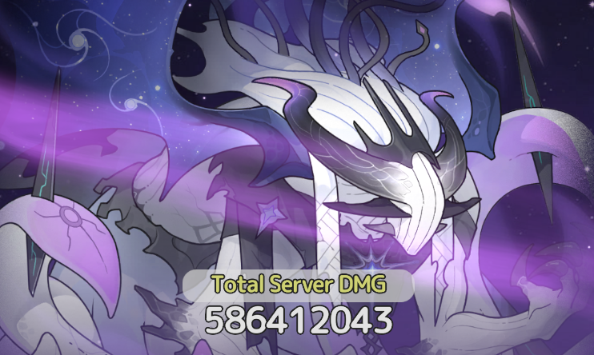
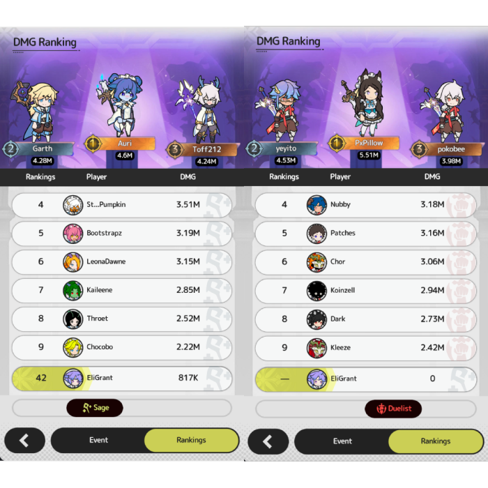
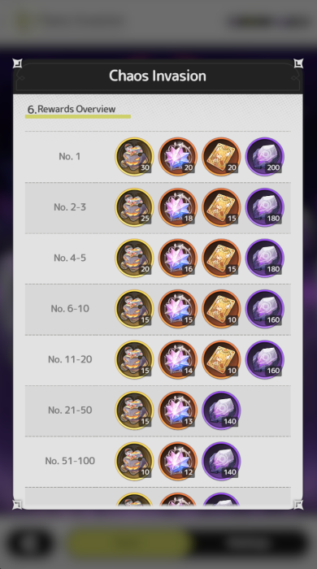
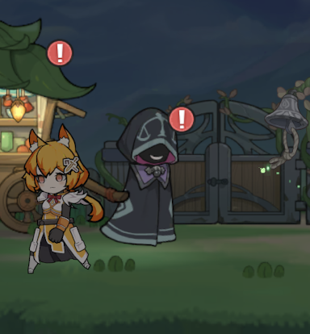

Hướng Dẫn Tân Thủ: Cuộc Xâm Lăng Hỗn Mang

Hôm nay mình sẽ phân tích rõ ràng và thực tế về Cuộc Xâm Lăng Hỗn Mang (Chaos Invasion) — nó là gì, Phần Thưởng nào thực sự quan trọng, và cách cải thiện thứ hạng của bạn một cách hiệu quả. Hướng dẫn này được viết để giúp bạn tránh những sai lầm thường gặp và chỉ tập trung vào những gì thực sự ảnh hưởng đến tiến trình phát triển của bạn. Bắt đầu nào.
Cuộc Xâm Lăng Hỗn Mang Là Gì?]

Xếp Hạng Theo Lớp
Lối chơi cốt lõi của Cuộc Xâm Lăng Hỗn Mang là cuộc đua xếp hạng sát thương, được tách riêng theo Lớp nhân vật. Để đảm bảo công bằng:
- Đấu Sĩ (Duelist) chỉ xếp hạng với Đấu Sĩ
- Thuật Sư (Sorcerer) chỉ xếp hạng với Thuật Sư
- Hiệp Sĩ (Knight) chỉ xếp hạng với Hiệp Sĩ
- Hiền Giả (Sage) chỉ xếp hạng với Hiền Giả
Trong chế độ này không có chuyện so sánh trực tiếp sát thương giữa các Lớp nhân vật khác nhau.
Kỳ Vọng Về Thứ Hạng (Hãy Thực Tế)]
Phần thưởng của Cuộc Xâm Lăng Hỗn Mang không quá hào phóng, vì vậy kỳ vọng rất quan trọng.
- Người chơi thường
- Đạt hạng 20–50 đã là hoàn toàn chấp nhận được
- Khi số lượng người chơi giảm dần theo thời gian, thứ hạng này sẽ tự nhiên tăng lên Top 10–20
- Người chơi nạp tiền
- Nên nhắm tới Top 5, nơi phần thưởng mới thực sự đáng giá
Đừng đầu tư quá mức chỉ để chạy theo chênh lệch thứ hạng nhỏ, trừ khi bạn biết rõ mình đang làm gì.
Phần Thưởng Quan Trọng Nhất (Rất Quan Trọng)]

Phần Thưởng Cuộc Xâm Lăng Hỗn Mang
Nhiều người chơi tin rằng phần thưởng giá trị nhất là:
- Covenite
- Legendary Auroral Badges
Điều này là sai.
Phần thưởng ưu tiên số 1: Primal Forge Shard
Vì sao nó quan trọng:
Tăng sản lượng Quặng Thô (Raw Ore) của Xe Đẩy (Cart) của bạn
- Ảnh hưởng trực tiếp đến:
- Xếp hạng cuối mùa
- Cấp trang bị tối đa
- Đặc biệt quan trọng với người chơi nạp nhiều
Không thứ gì khác trong Cuộc Xâm Lăng Hỗn Mang có giá trị lâu dài sánh được.
NPC Bí Ẩn – Nên Mua Gì (Và KHÔNG Nên Mua Gì)]
Vào ngày hôm sau khi Cuộc Xâm Lăng Hỗn Mang kết thúc:
- Một NPC Bí Ẩn sẽ xuất hiện trong Nhà (Home) của bạn
- Bạn có thể dùng Chaos Crystals để mua đồ tại đây
Quy tắc tuyệt đối (không có ngoại lệ)

Thương Nhân Cuộc Xâm Lăng Hỗn Mang
CHỈ mua Primal Forge.
- Đừng mua bất cứ thứ gì khác
- Nâng cấp nó lên tới Immortal
Nếu bạn không đủ tiền mua:
- Hãy giữ lại Chaos Crystals của bạn
- Đuổi NPC đi
- Lần sau tiếp tục đổi
Quy tắc này áp dụng cho mọi người chơi, bất kể mức độ nạp tiền.
Cách Cải Thiện Sát Thương Trong Cuộc Xâm Lăng Hỗn Mang]
Hãy hiểu sự khác biệt về tiến trình: mỗi lần bạn chuyển Lớp nhân vật: • Bạn nhận được Kỹ Năng (Skill) mới • Cách build tối ưu sẽ thay đổi tùy theo: • Bậc của Lớp nhân vật • Lựa chọn lối build • Giai đoạn phát triển của người chơi. Vì vậy, không có một cách build “tốt nhất” chung cho tất cả mọi người.
Nguyên Tắc Sát Thương Chung (Đa Số Người Chơi)]
Ngay cả khi chưa có lối build tối ưu, đa số người chơi đều tuân theo các nguyên tắc sau:
Hỗn Mang Có Giáp Rất Thấp
- Sát thương trong Cuộc Xâm Lăng Hỗn Mang cao hơn nhiều so với trong phụ bản
- Điều này ưu ái lối đánh dồn sát thương (burst) và phối hợp buff đội
Rất Khuyến Khích Chơi Theo Đội
Mọi Lớp nhân vật đều có Kỹ Năng buff đội.
Cách xếp đội tối ưu cho mỗi lượt chạy:
- 1 người gây sát thương chính
- 3 người hỗ trợ
Cách xoay vòng:
- Chạy 4 vòng
- Mỗi người chơi lần lượt làm người gây sát thương chính trong một vòng
Cách này hiệu quả hơn hẳn so với ghép đội ngẫu nhiên.
Chạy Solo – Khi Nào Nên Dùng]
Cuộc Xâm Lăng Hỗn Mang:
- Không cho phép mang theo bạn đồng hành
- Có thể chạy solo
Khi nào chạy solo hữu ích:
- Kiểm tra xem cách xếp Kỹ Năng nào cho sát thương cao hơn
- Chạy nhanh trước khi thoát game
Vì sao chạy solo dễ gây hiểu lầm:
- Cơ chế buff đội hoạt động khác đi
- Một số hiệu ứng (ví dụ tương tác Flame Aura của Đấu Sĩ) không thể hiện chính xác
Vì lý do này:
- Đừng dựa vào số sát thương solo để đánh giá hiệu quả thực tế
- Kết quả theo đội mới là thứ quyết định thứ hạng
Kết]
Cảm ơn bạn đã đọc.
Hẹn gặp bạn ở hướng dẫn tiếp theo.
Tạm biệt
Viết bởi QY Maple.